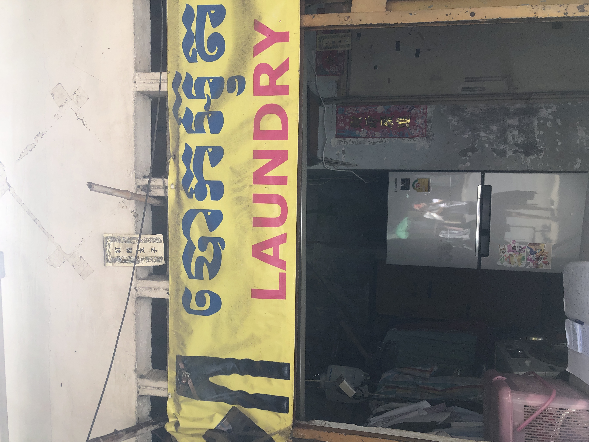

Tuk-tuks, two-wheeled carriages pulled by motorbikes that can fit anywhere from two people to entire families, are a ubiquitous sight throughout Cambodia. While the official name is remorque, or “trailer” in French, they are colloquially known as tuk-tuks, paying homage to their Thai counterparts.
